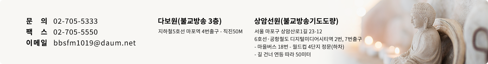
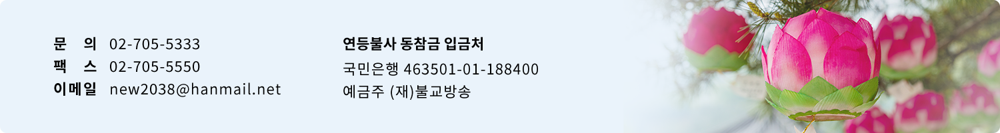
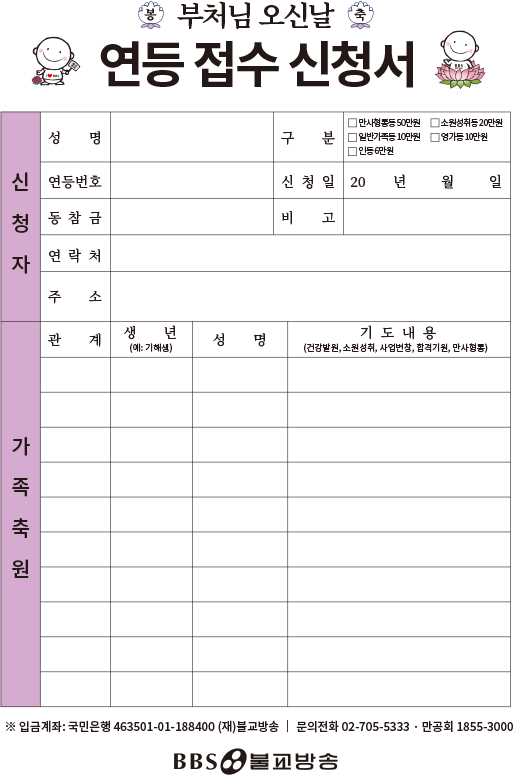
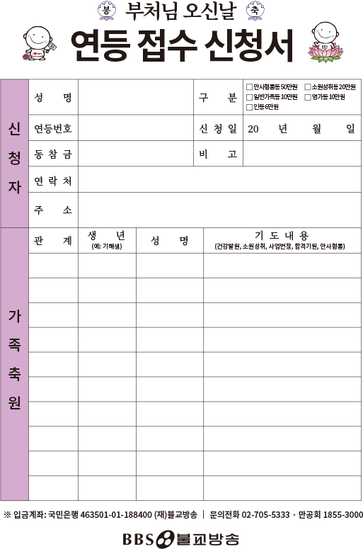
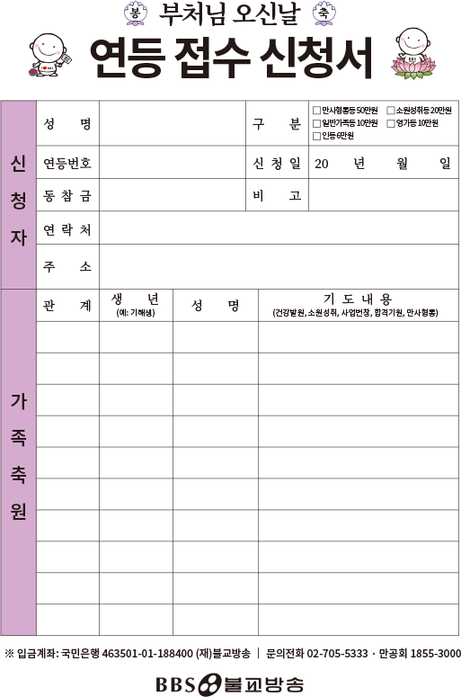

법회

2024-08-02
목록
2024-08-02
만공회 가족 축원기도법회
작성자 관리자
작성일 2024.05.01
 첨부파일: 첨부_만공회원 수행,가피,권선담 고마워요만공회! 신청서-개인정보동의서.hwp
첨부파일: 첨부_만공회원 수행,가피,권선담 고마워요만공회! 신청서-개인정보동의서.hwp2024년 7월 18일 (목) 10:00 // 상암선원
법사 : 무관스님 (만공회축원기도 지도법사,참나선원 주지)
*6호선,공항철도 디지털미디어시티역 2번,7번출구 - 마을버스 18번 - 월드컵4단지(정문)하차
*라디오(FM101.9) : 8/4(일) 10:00
*BBS TV : 8/4 (일) 09:00

연등 접수 신청서 다운로드
 




공지사항
전체보기
2025 BBS불교방송 홈페이지 리뉴얼 안내